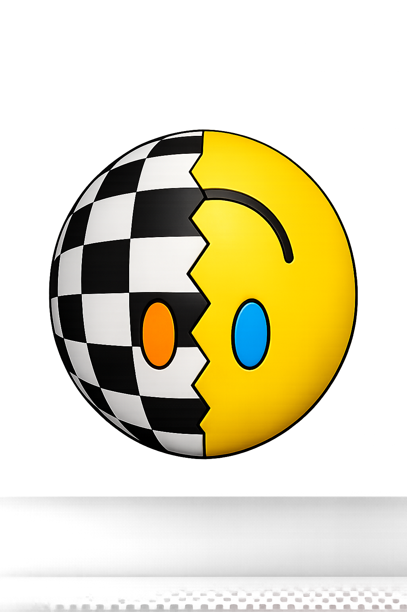

An Arasmas Labs Initiative

Project Theseus is a modular artificial intelligence platform designed to place complete control back into the hands of its owner. Every capability is built as an independent system that can evolve without replacing the whole.
Explore the PlatformProject Theseus is the flagship artificial intelligence platform developed by Arasmas Labs. Its purpose is to create an AI that remains personal, private, and modular—one that grows with its owner instead of replacing them. Rather than being a single application, Project Theseus is designed as an evolving ecosystem of independent components that work together while remaining under the user's control.